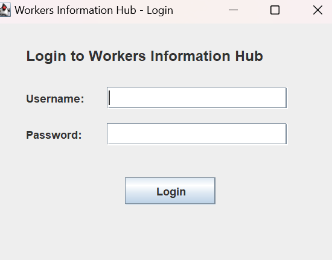
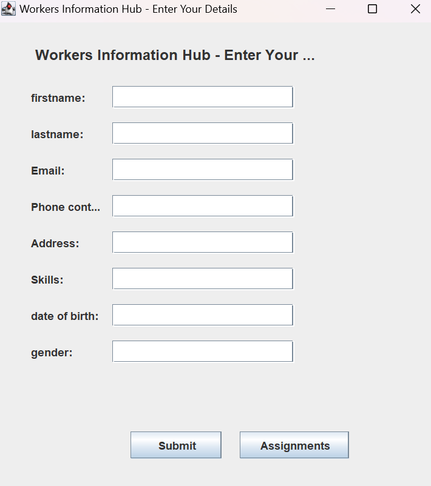
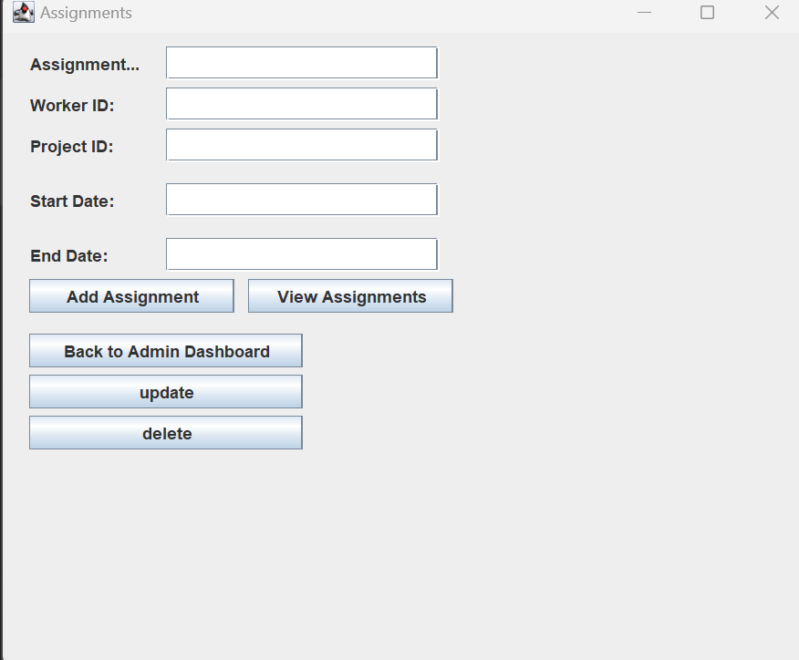
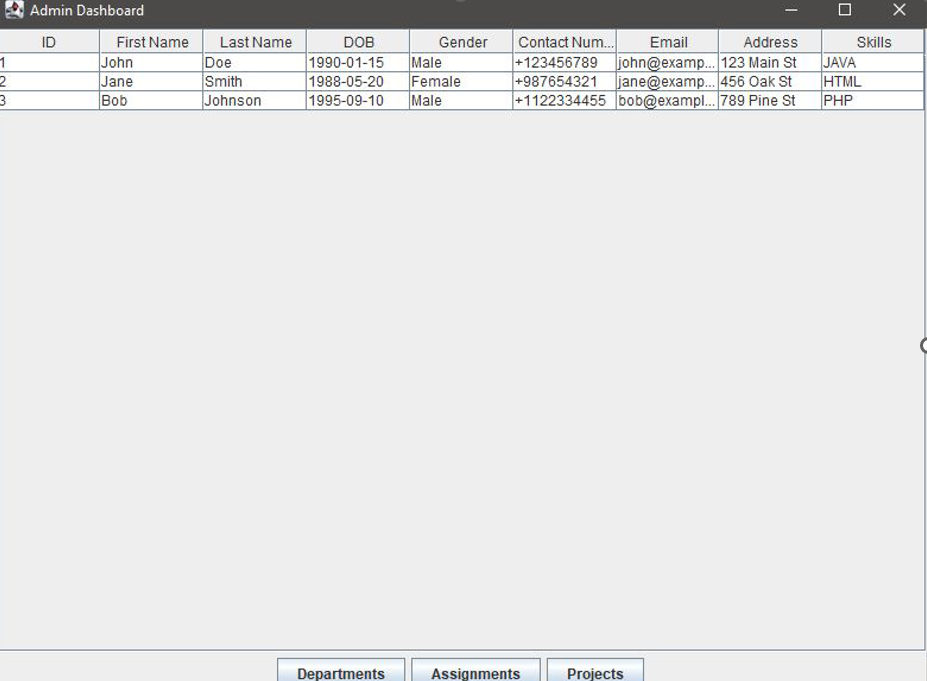

Database name used: worker_information_system.
In Worker Information System (WIS)the Admin table database structure typically stores information about users who have administrative privileges in the system. Here is a basic outline of the Admin table structure: Note: It will have email and password for all system users, except the admin to log in
workers table will organize and manage information about the workers in system.It keeps track of their personal details contact information and skills, making it easier to manage and interact with them within the system. detailed imformation about worker which will be like; worker_id ;first_name, last_name, date_of_birth, gender etc.
A Department table in a database typically contains information about different departments within an organization by storing their unique IDs and names.It include: department_id,department_name
This Assignment table servers as acentral repository for mannaging tasks, projects or responsibilities assigned to workers.It facilitates assignment tracking, task delegation, communication and collaboration among team members.Manager useuse this table to store assignment data, track progress, assign task to workers, and intgrate assignment detaials with worker information. Overall the assignment table plays a vital role in ensuring efficient task management and workforce coordination within organization. it include: assignment_id, assignment_name, etc.
A Projects table in a database typically records information about different projects including their unique IDs and names, facilitating organization and management of project. It lies in providing a framework for organizing tasks within the context of broarder projects. it include: project_id, project_name.
user_id: The columns which are represents the id number of user(ex: 1).
username: The column which are represents the username of user(ex:kim).
role: The column which are represents the role of user like admin.
Password: The column which are represents password of the user.
Attributes of worker Table Here are the descriptions or purposes of the attributes/columns used in worker Table:fname: The columns which are represents first name of worker.
lname: The columns which are represennts last name of worker.
phone: The column which are represents telephone number of worker.
DoB: The column which are represents Date of Birth of worker.
gender: The column which are represents or store gender of worker like female and male.
contact_number: The column which are represents phone contact of worker(ex:0788845894).
Email: The column which are represents Email of given workers.
address: The column which are represents the location of workers.
skills: The column which are represents the skills of worker (ex:Marketing).
Attributes of Department table Here are the descriptions or purposes of the attributes/columns used in worker Table:department_Id: The column which are represents id of department which is unique value called PRIMARY KEY. It is set to auto-increment (AUTO_INCREMENT). AUTO_INCREMENT means that the database will automatically generate a unique ID for each new record, typically incrementing the previous value of department table.
department_name: The column which are represents the name of department (ex: BIT, FINANCE).
Attributes of assignmentt table Here are the descriptions or purposes of the attributes/columns used in assignmnt Table:assignment_Id: The column which are represents the id of assignment .
assignment_name The column which are represents the name of assignment.
worker_id: The column which are represents the id of worker.
project_id: The column which are represents the id of project.
start_date: The column which are represents the date of assignment start(starting time).
end_date: The column which are represents the ending time of assignment.
Attributes of project table Here are the descriptions or purposes of the attributes/columns used in project Table: project_id: The column which are represents a unique identifier for each project. Likely a primary key..project_name: The column which are represents the name of project.
In this chapter I will be describing how powerful generalpurpose programming language was used to create the analyzed system. in this chapter I will undergo full information of how everything will function together with database that have been describe above and how it cope with full analyzed system.
Eclipse IDE: an integrated development environment used in computer programming. It contains a base workspace and an extensible plug-in system for customizing the environment. It is the second-most-popular IDE for Java development, and was the most popular.
JAR stands for Java Archive: It's a file format based on the popular ZIP file format and is used for aggregating many files into one. Although JAR can be used as a general archiving tool, the primary motivation for its development was so that Java applets and their requisite components.
Java Development Kit (JDK): It is the essential foundation. JDK provides the compiler that translates your Java code into instructions the computer understands, along with essential libraries for common functionalities.
It provides user authentication, access control and enhances system security by allowing only authorized users to access the system`s functionalities and data.
It allows workers to manage their personal information, view assignment, update skills, communicate with colleagues, and receive feedback, enhancing their engagement and participation in work-related activities within the system.
It allows users to manage tasks within projects, facilitating task creation , assignment, tracking, and analysis to ensure efficient project management and coordination.
This form it enables administrators to manage user accounts projects, data, system settings, security and support functions ensuring efficientadministration and oversight of the system.
Allows workers to manage their assigned task track deadlines access task details, communicate with team members, and receive feedback, facilitating effective task management and collaboration within the system